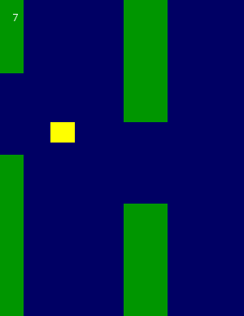
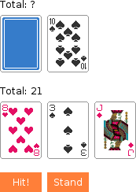

If you know some programming basics but don't quite know how to go about making something game-like, these tutorials are intended for you.
The idea behind these tutorials is that by being guided step by step through the process of making some games you will pick up some ideas that will help you turn a simple game idea of your own into code.
How to follow these tutorials
- Download the .love file and play it to understand what happens in the game.
- Read the overview of how the game's data is stored and how it changes based on input and time.
- Create a LÖVE project of your own and follow along with the coding by typing/copying in the code and running it after every step. If the tutorial uses images, unzip the .love file and copy the images from there.
The coding style
- When a value is used more than once it is generally made into a variable, and when code is used more than once it is generally made into a function.
- Variables and functions are generally declared as close to the other code that uses them as possible, and if possible are local to the scope that uses them.
- The window size is never changed from LÖVE's default window size in the tutorials, but you can set the window size yourself using love.conf.
Tip
- Use a debugger, like ZeroBrane Studio. It will allow you to see how your code runs line by line and what the values of variables are.
Asteroids

Bird
Blackjack
Blocks

Eyes

Fifteen

Flowers

Life